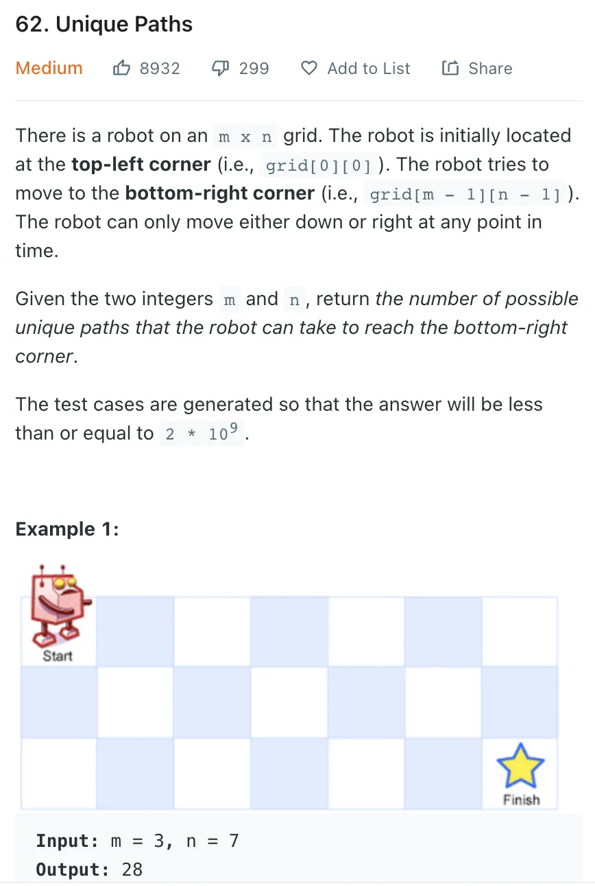
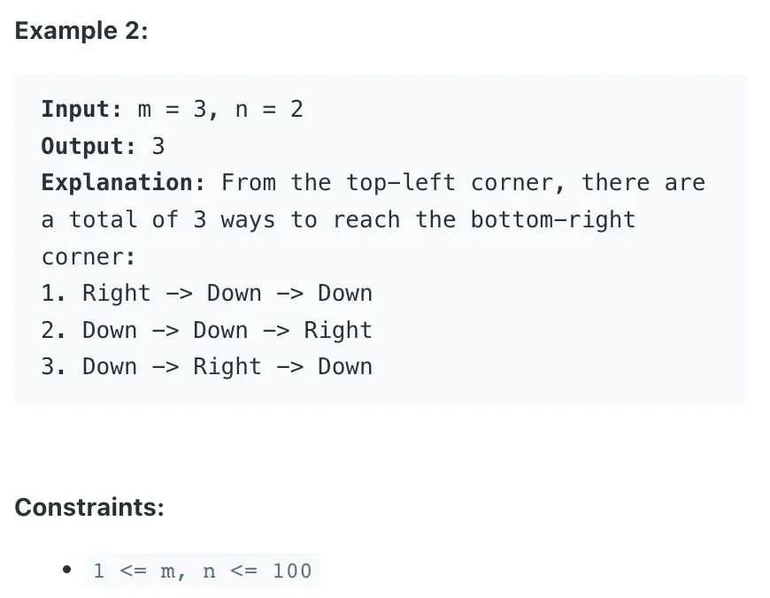

62. Unique Paths
考過的公司：Amazon、Google
Question


✍🏽 My Solution
Runtime: 0 ms, faster than 100.00% of Java online submissions for Unique Paths. Memory Usage: 40.9 MB, less than 52.81% of Java online submissions for Unique Paths.
class Solution {
public int uniquePaths(int m, int n) {
if (m == 1 || n == 1) return 1;
int[][] dp = new int[m][n];
for (int i = 0; i < m; i++) {
dp[i][0] = 1;
}
for (int i = 0; i < n; i++) {
dp[0][i] = 1;
}
for (int i = 1; i < m; i++) {
for (int j = 1; j < n; j++) {
dp[i][j] = dp[i-1][j] + dp[i][j-1];
}
}
return dp[m-1][n-1];
}
}
🧠 Thought Process
- Why did I choose this particular implementation?
- 參考王爭
- What is the time/space complexity of my solution? How do I know?
- time: O(m*n)
- space: O(m*n)
- How do better solutions differ from my own?
- 這題有想到遞推公式，但是不知道是要轉換成 dp[i-1][j] + dp[i][j-1]
Solution #1 [technique]
class Solution {
public int uniquePaths(int m, int n) {
int[] dp = new int[n];
for (int i = 0; i < n; i++) {
dp[i] = 1;
}
for (int i = 1; i < m; i++) {
for (int j = 1; j < n; j++) {
dp[j] = dp[j] + dp[j - 1];
}
}
return dp[(n - 1)];
}
}
Explanation (in my words)
- How does their solution work?
- 正向考虑的，和上边的想法刚好相反。如果把 dp [ i ] [ j ] 表示为从点 （0，0）到点 ( i，j）的走法。
- dp [ i ] [ j ] = dp [ i - 1 ] [ j ] + dp [ i ] [ j - 1 ]
- What is the space/time complexity of their solution?
- time: O(m*n)
- space: O(n)